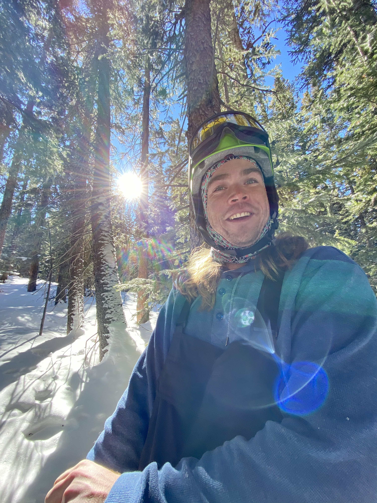

My Name is Logan Schoerner, I was born in Fort Myers Florida November 23rd 1996. When I was 19 I moved to Denver Colorado to experience what the west and mountians had to offer. I was immediately hooked and never wanted to leave the west. After 5 years in Denver Covid graced us with it's presence, I knew then it was time for a change. I built my Subaru out so i could functionlly live in it. for the following 6 months I traveled throughout Colorado, Utah, and Wyoming. when winter rolled around I moved to Park City Utah then to Sandy Utah where I reside do this day with my lovely girlfriend and our two huskies.